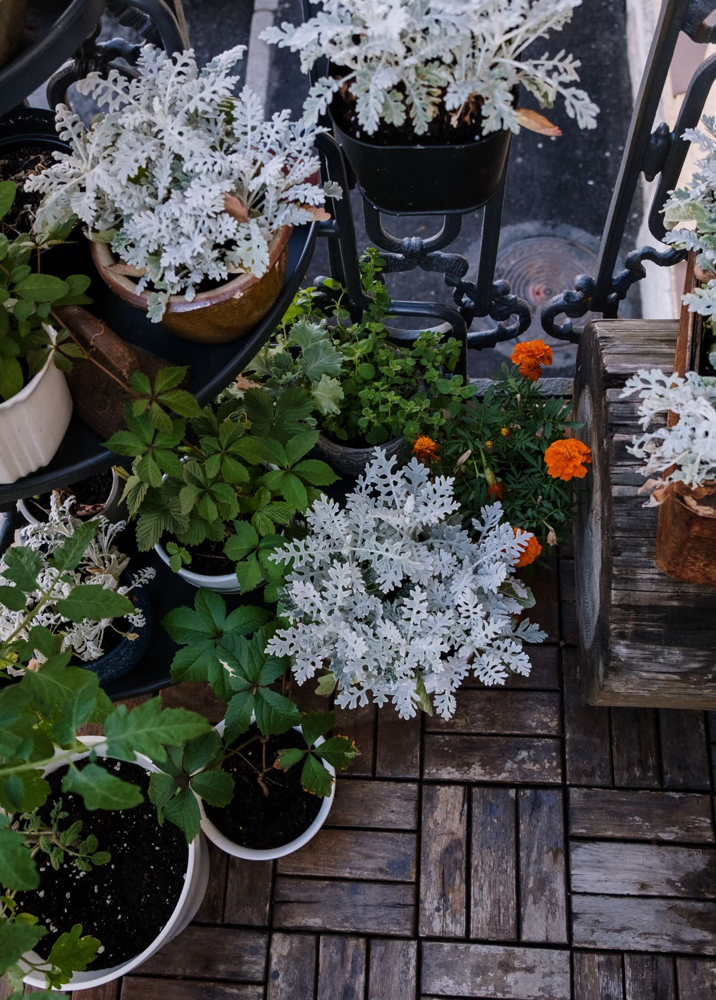

Son approche
Il relie l’observation des plantes aux gestes à faire au bon moment, avec des conseils adaptés aux volumes de terre limités, aux expositions changeantes et aux petits accidents de culture en ville.

Pots brûlants, terreau qui sèche et racines stressées : les gestes simples pour protéger les contenants sur un balcon chaud sans tout déplacer.

Feuilles qui blanchissent en pot : reconnaître l'oïdium, éviter les confusions et agir sans gestes excessifs sur courgettes, concombres, tomates et...

Variété compacte, grand pot, soleil et pollinisation : les repères pour tenter une courgette en pot sans se faire déborder.

Un grand pot, un tuteur solide et des récoltes jeunes : comment garder le concombre productif dans un espace limité.

Balcon plein soleil : plantes résistantes, légumes, aromatiques, fleurs, paillage et arrosage pour réussir un potager en pot malgré la chaleur.

Comment jardiner sur un balcon : exposition, kit de départ, plantes faciles, arrosage et étapes simples pour débuter un potager de balcon en ville.

Récupérer l’eau de pluie sans gouttière : idées simples sans gouttière, stockage prudent et usages utiles pour arroser sans gaspiller.

Quand sortir tomates, poivrons et basilic dehors : repères de température, Saints de glace et méthode d’acclimatation simple pour éviter le coup de froid.

Que planter en avril en pots : radis, laitues, fraisiers, aromatiques, pommes de terre et premiers plants d’été. Le guide simple pour bien démarrer.

Apprenez à créer un potager balcon en combinant semis faciles et arrosage à l’eau de cuisson, pour économiser l’eau, enrichir le sol et cultiver des...

Paillage en pot : paillis adaptés, épaisseur, arrosage et gestes propres pour garder la terre fraîche sans attirer les nuisibles ni étouffer les plantes.